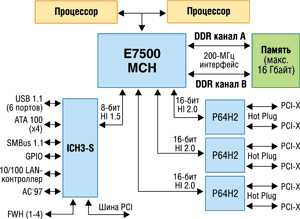
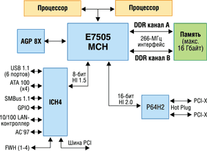
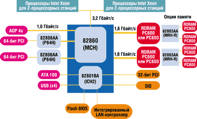
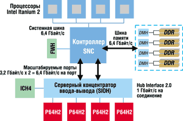
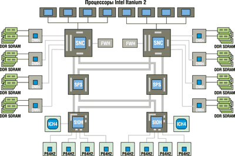

Евгений Рудометов, Виктор Рудометов
rudometov@mail.ru
В статье использованы материалы компании Intel.
В первой части статьи речь шла о серверных наборах микросхем системной логики Intel прошлых лет, ставших основой большого числа высокопроизводительных систем. Однако эти НМС и созданные на их основе серверные решения, несмотря на всю их функциональную насыщенность, уже принадлежат истории. После выпуска серверных версий процессоров с архитектурой Intel NetBurst появилась и линейка более совершенных наборов микросхем системной логики - Intel E75xx, родоначальником которой стал Intel E7500. Эти НМС в большей степени соответствуют расширенным возможностям и улучшенной архитектуре серверных процессоров нового поколения.
Процессоры Intel Xeon
Прежде чем оценивать достоинства и недостатки серверных НМС линейки Intel E75xx, целесообразно напомнить основные характеристики процессоров Intel Xeon. Они построены на том же ядре, что и Intel Pentium 4. Ниже вкратце рассмотрены основные характеристики этого 32-разрядного (IA-32) ядра.
Гиперконвейерная технология (Hyper Pipelined Technology). Длинный конвейер позволяет за счет некоторого снижения числа операций, выполняемых за такт, значительно увеличить тактовые частоты. Это увеличивает общую производительность.
Улучшенное предсказание ветвлений (Improved Branch Prediction). Поскольку операции очистки и заполнения длинного конвейера требуют сравнительно много времени, для сохранения высокой производительности необходимо использовать эффективный модуль предсказания ветвлений.
Кэш с отслеживанием 12 тысяч инструкций (12K micro-op trace cache). Специальный кэш повышает эффективность обработки команд и данных в условиях длинного конвейера.
Механизм быстрого исполнения (Rapid Execution Engine). Два арифметико-логических модуля работают на удвоенной тактовой частоте, что позволяет обрабатывать в два раза больше данных за такт и эффективно загрузить длинный конвейер.
Улучшенный кэш передачи (Advanced Transfer Cache). Кэш-память 2-го уровня не только имеет 256-разрядную шину, но и способна передавать данные в течение каждого такта, что обеспечивает высокую пропускную способность подсистемы этого типа памяти.
Аппаратная упреждающая выборка (Hardware Prefetch). За счет эффективного механизма предсказания процессор обеспечивает предварительную выборку и загрузку данных из памяти в кэш.
Четырехскоростная (quad pumped) шина процессора. Пропускная способность шины увеличена в четыре раза за счет передачи данных на учетверенной, а адреса - на удвоенной тактовой частоте.
Потоковые SIMD-расширения 2 (SSE2). Система команд расширена за счет 144 дополнительных инструкций для обработки потоковых данных.
Технология Hyper-Threading. Значительно повышает производительность при работе с многопоточными приложениями или в многозадачных средах, поддерживая несколько программных потоков на каждом процессоре. Это достигается за счет аппаратной поддержки двух виртуальных процессоров при наличии одного физического.
Для архитектуры процессоров Intel Xeon предусмотрена также поддержка двухпроцессорных конфигураций. Кроме того, объем кэш-памяти 2-го уровня (L2) выпускаемых моделей этой группы процессоров составляет 512 и 1024 Кбайт.
Большой объем кэш-памяти L2 обеспечивает высокую производительность и запас ресурсов для эффективной работы в условиях пиковых нагрузок со стороны внешних и корпоративных приложений, требующих уменьшения времени отклика системы, увеличения производительности, поддержки большего числа пользователей и высокой масштабируемости. Тактовая частота старших моделей процессоров Intel Xeon достигает 3,06 и 3,2 ГГц.
Следует отметить, что реализация потенциальных возможностей высокопроизводительных процессоров Intel Xeon в значительной степени зависит от эффективности работы наборов микросхем системной логики, поддерживающих эти процессоры.
E7500/7501/7505
Итак, Intel E7500 представляет собой следующий шаг в развитии технологии и архитектуры наборов микросхем Intel, созданных как основа высокопроизводительных серверных систем нового поколения. Эти НМС отличают широкие функциональные возможности и высокая производительность, способные раскрыть потенциал серверных процессоров с очень высокой тактовой частотой работы внутренних структур.
Первый в своем семействе, набор микросхем Intel E7500 поддерживает двухпроцессорные серверные платформы (рис. 1), оптимизированные для процессоров Intel Xeon микроархитектуры NetBurst.
|  | Рис. 1. Структура сервера на основе НМС Intel E7500.
|
НМС Intel E7500 ориентирован на архитектуру серверов в одно- или двухпроцессорных конфигурациях и поддерживает процессоры Intel Xeon. Данные процессоры работают с шиной FSB типа QPB (Quad-Pumped Bus), тактовая частота которой для данного НМС и соответствующих процессоров составляет 100 МГц. Учитывая особенности алгоритма и интерфейса работы процессорной шины, частота 100 МГц обеспечивает передачу данных с частотой 400 МГц, а адреса - 200 МГц (4X для данных и 2X - для адреса). В результате пиковая пропускная способность шины процессора достигает по сравнению с предшественниками, имеющими архитектуру P6, чрезвычайно высокого значения - 3,2 Гбайт/с.
Intel E7500, как и его серверные предшественники, традиционно поддерживает 36-бит адресацию, протокол SMP (Symmetric Multiprocessing Protocol) для двух процессоров, контроль четности (Parity protection), коррекцию ошибок (ECC) и т. п.
Данный НМС состоит из трех компонентов - контроллер-концентратор памяти набора микросхем (Memory Controller Hub, MCH), контроллер-концентратор ввода-вывода (I/O Controller Hub 3-S, ICH3-S), контроллер-концентратор 64-разрядной шины PCI/PCI-X (PCI/PCI-X 64-bit Hub 2, P64H2).
Компонент MCH представлен микросхемой Intel E7500 MCH, содержащей средства интерфейсов работы с процессором, модулями оперативной памяти и с микросхемами ввода-вывода и плат расширения - I/O Controller Hub и PCI/PCI-X 64-bit Hub 2. Встроенный в микросхему контроллер памяти поддерживает двухканальный режим работы памяти DDR SDRAM (Double Data Rate SDRAM - с передачей данных по передним и задним фронтам тактовых импульсов шины памяти), модули памяти DDR200, максимальный объем памяти до 16 Гбайт, микросхемы 64, 128, 256, 512 Мбит DDR SDRAM, шину памяти 144 бит, модули регистровой памяти ECC DDR. Следует отметить, что двухканальное построение подсистемы памяти обеспечивает полосу пропускания 3,2 Гбайт/с, что соответствует аналогичному показателю процессорной шины. Это обеспечивает согласованность системы по информационным потокам и, как следствие, высокую производительность.
Связь с компонентами I/O Controller Hub 3-S и PCI/PCI-X 64-bit Hub 2 осуществляется с помощью хабовых интерфейсов (hub interface) - соответственно HI 1.5 и HI 2.0. Основные параметры интерфейса HI 1.5 таковы: 8 бит, 66 МГц (4x-интерфейс со скоростью передачи данных 256 Мбайт/с). Интерфейс HI 2.0 характеризуется следующими параметрами: 16 бит, 66 МГц (4x-интерфейс со скоростью передачи данных 1 Гбайт/c).
Компонент Р64Н2, обеспечивающий интерфейс с 64-разрядными платами расширения PCI/PCI-X, представлен специализированной микросхемой Intel 82870P2. Этот компонент соединяется с контроллером-концентратором MCH через поточечное соединение интерфейса Hub Interface 2.0. К микросхеме MCH, входящей в состав E7500, можно подключить до трех контроллеров P64H2. Пропускная способность каждого из них составляет 1 Гбайт/с, что в сумме дает 3,2 Гбайт/с - резерв для общей пропускной способности всех устройств, подключаемых через данный вариант интерфейса. Каждое устройство P64H2 содержит два независимых 64-разрядных интерфейса PCI-X и два контроллера PCI (по одному на каждый интерфейс PCI-X). Каждый 64-разрядный сегмент PCI-X поддерживает несколько разъемов PCI-X, обеспечивая высокую пропускную способность соединения для скоростных компонентов. В качестве примера таких устройств можно привести адаптеры Intel Gigabit Ethernet.
За управление традиционными сравнительно медленными периферийными устройствами отвечает контроллер ICH3-S, представленный микросхемой Intel 82801CA. Он соединяется с контроллером-концентратором MCH через поточечное соединение интерфейса Hub Interface 1.5. Контроллер-концентратор ICH3-S с помощью встроенных специализированных средств поддерживает стремительно устаревающие интерфейсы ввода-вывода. К этим средствам относятся встроенные в микросхему ICH3-S контроллеры SMBus 2.0, PCI 2.2, двух каналов ATA/100 (Ultra DMA) для подключения устройств IDE, шести портов USB, локальной сети 10/100M LAN, AC'97 и т. д.
На основе Intel E7500 было создано множество серверов и мощных рабочих станций, нашедших широкое применение в разных отраслях экономики. Однако появление новых моделей процессоров потребовало выпуска адекватных им НМС.
Одновременно с выходом процессоров Intel Xeon на основе ядра Prestonia (техпроцесс 0,13 мкм) был анонсирован соответствующий набор системной логики. Этот НМС, ранее известный как Plumas, предназначен для поддержки данных процессоров и представляет собой дальнейшее развитие архитектуры Intel E7500. После официального объявления новый НМС получил наименование Intel E7501.
Итак, Intel E7501 фактически представляет собой усовершенствованный вариант Intel E7500. Отличие его от предшественника состоит прежде всего в поддержке возросших тактовых частот процессорной шины и модулей оперативной памяти. Действительно, если Intel E7500 рассчитан на частоту процессорной шины 100 МГц (напомним, частота передачи данных при этом - 400 МГц, адреса - 200 МГц), то Intel E7501 поддерживает тактовые частоты 100 и 133 МГц (частоты передачи данных - соответственно 400 и 533 МГц, адреса - 200 и 266 МГц) и модули памяти DDR200 и DDR266.
Все остальные параметры Intel E7501 практически совпадают с параметрами его прототипа, Intel E7500.
Как и предшественник, Intel E7501 состоит из трех компонентов - контроллер-концентратор памяти (Memory Controller Hub, MCH), контроллер-концентратор ввода-вывода (I/O Controller Hub 3-S, ICH3-S), контроллер-концентратор 64-разрядной шины PCI/PCI-X (PCI/PCI-X 64-bit Hub 2, P64H2). Компонент MCH представлен микросхемой Intel E7501, компонент ICH3-S - микросхемой Intel 82801CA, а Р64Н2 - микросхемой Intel 82870P2. Здесь следует обратить внимание, что два из трех компонентов - те же самые, что и в случае Intel E7500. Отличия связаны только с контроллером-концентратором памяти MCH, который и определяет все преимущества НМС Intel E7501 перед E7500.
К семейству Intel E75xx относится также НМС Intel E7505, до официального выпуска носивший кодовое название Placer. Вообще говоря, этот чипсет не считается серверным, а позиционируется как основа для мощных рабочих станций, аналогично недавно выпущенному Intel 875P. Тем не менее на основе НМС Intel E7505 производители выпускают машины, представляемые как серверные решения. Подобные варианты уже рассматривались в первой части статьи: часть описанных там наборов формально не относилась к числу серверных. К слову сказать, если на сайте http://www.intel.ru Intel E7505 включен в группу НМС для рабочих станций, то на сайте http://www.intel.com этот же чипсет представлен и как серверный. Это в какой-то степени свидетельствует о широких возможностях данного специализированного НМС, который может использоваться в самых разных решениях, чем и не преминули воспользоваться поставщики систем высокой производительности.
Intel E7505 предназначен для систем одно- или двухпроцессорных конфигураций (рис. 2). Он поддерживает до двух процессоров Intel Xeon (ядро Prestonia), процессорную шину с тактовыми частотами 133 и 100 МГц и двухканальную конфигурацию подсистемы оперативной памяти DDR266 или DDR200.
|  | Рис. 2. Структура сервера на основе НМС Intel E7505.
|
В отличие от серверных НМС Intel E7500 и Intel E7501, в составе Intel E7505 вместо микросхемы ICH3-S, отвечающей за ввод-вывод, используется традиционный компонент ICH4. Кроме того, в архитектуре компонента MCH имеется нетрадиционный для серверных решений, но стандартный для настольных компьютеров порт AGP 8Х, а вместо трех микросхем P64H2 используется одна микросхема данного типа.
Intel 860 и Intel 875
Еще одним примером использования в качестве основы серверных систем наборов микросхем, ориентированных на рынок мощных рабочих станций, может служить Intel 860. Этот НМС разработан специально для высокопроизводительных систем и поддерживает два процессора (рис. 3). Intel 860 (равно как и Intel 875) предназначен для процессоров Intel Xeon архитектуры Intel NetBurst и совместно с ними обеспечивает высокий уровень производительности и масштабируемости систем.
В набор микросхем Intel 860 входят два основных компонента - контроллер-концентратор памяти 82860 (MCH) и контроллер-концентратор ввода-вывода 82801 (ICH2).
|  | Рис. 3. Структура сервера на основе НМС Intel 860.
|
Контроллер-концентратор памяти поддерживает процессорную шину с тактовой частотой 100 МГц (частота передачи данных 400 МГц), имеет высокопроизводительные сдвоенные каналы для памяти RDRAM (4 модуля RIMM, PC800/600, ECC) и обеспечивает подключение внешних устройств, в том числе и через две высокоскоростные 64-разрядные PCI-шины, работающие на частоте 66 МГц. Кроме того, он поддерживает графические системы с AGP 4X.
Контроллер-концентратор ввода-вывода связан с компонентом MCH локальной шиной, типичной для линейки НМС Intel 8хх. Он устанавливает прямой канал связи с графической системой и памятью, что ускоряет доступ к внешним устройствам, и обеспечивает функции и полосу пропускания, необходимые для высокопроизводительных компьютерных решений. Поддерживаются 32-разрядный контроллер PCI, интерфейс Ultra ATA/100, интегрированный контроллер локальной сети и два сдвоенных контроллера USB, обеспечивающих передачу данных по четырем портам. Из прочих усовершенствований контроллера-концентратора назовем поддержку шести цифровых звуковых каналов (для достижения объемного звучания) и контроллера AC'97.
Помимо высокой производительности, набор микросхем Intel 860 обеспечивает высокие уровни масштабируемости. К его основным компонентам могут подключаться два дополнительных: 64-разрядный контроллер-концентратор PCI 82806AA (P64H) и концентратор-повторитель памяти RDRAM 82803AA (MRH-R).
Микросхема P64H поддерживает 64-разрядную шину PCI с частотой 33 или 66 МГц. Эта микросхема подключается непосредственно к контроллеру-концентратору MCH в соответствии с улучшенной хабовой архитектурой Intel и обеспечивает выделенный высокоскоростной канал ввода-вывода.
Микросхема MRH-R предназначена для систем с повышенными требованиями к емкости памяти RDRAM. Она позволяет преобразовать каждый канал памяти в два, эффективно увеличивая максимальный объем поддерживаемой памяти - до восьми модулей RIMM.
Как своего рода упрощенный вариант Intel 860 можно рассматривать НМС Intel 850, который также рассчитан на системы с памятью RDRAM в двухканальной конфигурации. Кстати, эта конфигурация напоминает хорошо известные Intel 820 и Intel 840, разработанные для процессоров Intel Pentium III и Pentium III Xeon. Однако в отличие от указанных НМС, Intel 860 и Intel 850 благодаря высокой пропускной способности процессорной шины FSB типа QPB обеспечивают сбалансированные относительно информационных потоков решения.
Хотя НМС Intel 850 и позиционировался в качестве основы рабочих станций и мощных настольных компьютеров, его богатые потенциальные возможности позволили некоторым фирмам применять его в серверных решениях. Правда, эти решения не снискали особой популярности у пользователей.
В качестве еще одного претендента на роль НМС для серверных систем выступает более современный по сравнению с Intel 860 чипсет Intel 875P, ориентированный, вообще говоря, на рынок рабочих станций и мощных настольных компьютеров. На основе этого НМС некоторые производители выпустили серверные системы начального уровня с процессорами Intel Pentium 4 (к примеру, Intel предлагает систему Intel Entry Server Board S875WP1-E). Впрочем, в этом нет ничего удивительного, поскольку пользователям известна и системная плата Intel Server Board S845WD1-E, созданная на основе НМС Intel 845PE (с традиционной до недавнего времени одноканальной конфигурацией оперативной памяти), который уступает по возможностям более мощному Intel 875P.
НМС Intel 875P, известный ранее как Canterwood, ориентирован на создание рабочих станций и высокопроизводительных настольных ПК. Он поддерживает процессоры Intel Pentium 4 с технологией Hyper-Threading (техпроцесс 0,13 мкм), подключаемые через разъем Socket 478 и работающие с шиной FSB типа QPB. Тактовая частота может составлять 100, 133 или 200 МГц.
Встроенный в микросхему Intel 82875P (MCH) контроллер процессорной шины FSB типа QPB поддерживает шину с частотой 200/133/100 МГц, что обеспечивает передачу данных на частотах соответственно 800/533/400 МГц.
Контроллер памяти поддерживает одно- и двухканальный режимы работы оперативной памяти DDR SDRAM с модулями DDR400/333/266, максимальный объем памяти до 4 Гбайт, микросхемы 128, 256, 512 Мбит DDR SDRAM, модули как с ECC, так и без ECC. В конфигурациях с поддержкой ECC в двухканальном режиме используется шина 144 бит, без поддержки ECC - 128 бит.
Для синхронного режима работы модулей оперативной памяти DDR400 и частоты шины 800 МГц возможен режим, обеспечивающий повышенную производительность подсистемы памяти, - технология Intel PAT (Performance Acceleration Technology). В этом режиме минимизированы задержки, связанные с синхронизацией.
Встроенный контроллер графики поддерживает одно устройство 0,8/1,5 В AGP 3.0, обеспечивающее режим AGP 8X.
Из особенностей MCH отметим, что в его архитектуре реализован специальный интерфейс (шина CSA), поддерживающий Gigabit Ethernet. Перенос этих средств из микросхемы ICH в MCH объясняется недостаточной пропускной способностью локальной шины, соединяющей концентраторы MCH и ICH.
Управление периферийными устройствами компьютера осуществляет второй компонент чипсета - ICH5, представленный микросхемой Intel 82801ЕB (последняя входит в базовый набор НМС i875P). Встроенные средства микросхемы управления периферийными устройствами поддерживают два канала IDE с поддержкой ATA 33/66/100 (до четырех устройств IDE), два порта Serial ATA 150, шесть портов USB 2.0, шесть PCI (32 бит/33 МГц), LPC (Low Pin Count), AC'97 с поддержкой трех кодеков аудиоканалов, интегрированный контроллер 10/100 Base-TX Ethernet, SMBas, ACPI 2.0, а также другие средства и функции.
Кроме Intel 82801ЕB, может использоваться расширенная версия концентратора ICH5 - ICH5R. Этот вариант представлен микросхемой Intel 82801ЕR, которая отличается от своего предшественника наличием функции RAID уровня 0 (технология Intel RAID 0).
НМС для Itanium/Itanium 2
Высокопроизводительные 64-разрядные (IA-64) процессоры Intel Itanium и Intel Itanium 2 относятся к классу high-end среди серверных процессоров Intel. Процессоры линейки Intel Itanium созданы на основе архитектуры EPIC (Explicitly Parallel Instruction Computing). Они имеют 128 регистров общего назначения, 128 регистров для операций с плавающей точкой, 64 предикативных регистра, 8 регистров ветвления. В них реализована 64-разрядная адресация и высокая пропускная способность памяти, а также усовершенствованная архитектура автоматической проверки Machine Check Architecture (MCA) с расширенным использованием кода коррекции ошибок ECC. Процессоры совместимы с ОС HP-UX, Linux, Windows Server 2003. По заявлению производителя, возможно создание многопроцессорных конфигураций из 512 процессоров.
Первым набором микросхем системной логики для 64-разрядной микроархитектуры семейства процессоров Intel Itanium стал Intel 460GX. Данный многоконфигурационный НМС оптимизирован для серверных систем с числом процессоров от одного до четырех и двухпроцессорных рабочих станций на базе процессоров Intel Itanium.
Набор микросхем Intel 460GX поддерживает интерфейс контроллера памяти и соответствующие мосты шин PCI, AGP 4X и других стандартных шин устройств ввода-вывода.
Контроллер-концентратор памяти представлен микросхемами 82461GX или 82462GX, поддерживает память PC100 SDRAM объемом до 64 Гбайт и видеографику стандарта AGP 4X/2X.
Контроллер ввода-вывода IFB поддерживает PCI 2.2, ATA 33, два порта USB, встроенные средства AC'97 и т. п. Предусмотрено расширение подсистемы ввода-вывода за счет моста PCI eXpander (PXB), высокоскоростного моста PCI eXpander (WXB).
Как известно, развитием архитектуры Intel Itanium стала линейка процессоров Intel Itanium 2. Процессоры Intel Itanium 2 совместимы на уровне двоичного кода с существующим ПО для Intel Itanium, что обеспечивает преемственность разработок системного и прикладного ПО.
Микроархитектура процессора Intel Itanium 2 обеспечивает быстрый доступ к интегрированной кэш-памяти, высокую пропускную способность при обмене информацией между центральным процессором и системной памятью и обладает значительными вычислительными ресурсами, ускоряющими выполнение команд и повышающими общую производительность системы. В архитектуре Intel Itanium 2 использована 124-бит шина (ранее - 64 бит), обеспечивающая передачу данных на частоте 400 МГц (ранее - 256 МГц), что увеличило втрое пропускную способность шины процессора по сравнению с предшественником.
Выпущено несколько моделей процессора Intel Itanium в вариантах MP (Multi-Processor) и DP (Dual Processor) с тактовыми частотами 1,0, 1,3, 1,4 и 1,5 ГГц. Трехуровневая кэш-память данных моделей характеризуется следующими значениями объема: L1 - 32 Кбайт (команды и данные), L2 - 256 Кбайт и L3 соответственно - 1,5, 3, 4 и 6 Мбайт. Модель с тактовой частотой 1,4 ГГц существует в двух вариантах: с объемом кэш-памяти 3-го уровня 1,5 и 4 Мбайт.
Старшая модель процессора Intel Itanium 2 с объемом кэш-памяти 3-го уровня 6 Мбайт (ядро Madison, техпроцесс 0,13 мкм) аппаратно и программно совместима с первой версией Intel Itanium 2 (ядро McKinley, 0,18 мкм). Это обеспечивает защиту инвестиций OEM-производителей и пользователей. Кроме того, эта модель совместима на уровне двоичного кода с программами для архитектуры Intel Itanium (Merced, 0,18 мкм) и обеспечивает повышение производительности на 30-50% по сравнению с предшественником.
Для поддержки новых процессоров был разработан специальный набор системной логики, получивший наименование Intel E8870 (Intel 870). Это первый в архитектуре нового поколения НМС, специально разработанный для двух- и четырехпроцессорных серверных платформ высшего уровня (рис. 4). Intel E8870, оптимизированный для процессора Intel Itanium 2, обеспечивает высокий уровень производительности и масштабируемости, а также предотвращения, обнаружения и исправления ошибок.
|  | Рис.4. Структура сервера на основе НМС Intel 8870.
|
Набор микросхем Intel E8870 состоит из следующих основных компонентов: Intel E8870IO (SIOH), Intel E8870 (SNC), Intel E8870DH (DMH), Intel 82870P2 PCI/PCI-X (P64H2), Intel 82801DB (ICH4).
Основные характеристики Intel 8870 таковы: 400 МГц, 128-разрядная системная шина, что обеспечивает высокую скорость передачи данных - до 6,4 Гбайт/с, очень большой объем оперативной памяти: концентратор DMH предоставляет в сумме 32 разъема для установки памяти на каждый процессорный узел, и в итоге максимальный объем составляет 128 Гбайт (с 4 DDR Memory Hubs).
Поддерживаются два масштабируемых порта с высокой пропускной способностью. Четыре соединения интерфейса Hub Interface 2.0 имеют пропускную способность 1 Гбайт/с на каждое соединение, что позволяет применять до четырех 64-разрядных контроллеров PCI/PCI-X (P64H2) с интерфейсом HI 2.0. Имеется механизм предзагрузки данных и встроенная кэш-память системы ввода-вывода. Высокопроизводительный мост PCI/PCI-X обеспечивает поддержку всех устройств ввода-вывода PCI/PCI-X I/O, начиная от устаревших PCI и заканчивая высокопроизводительными PCI-X на частоте 133 МГц (каждый контроллер P64H2 содержит два независимых 64-разрядных канала PCI-X с максимальной частотой 133 МГц).
Кроме того, комбинация таких характеристик, как модули hot-plug для процессора и памяти, обнаружение и коррекция ошибок, восстановление сбоев устройств памяти (MDFR), резервные пути ввода-вывода и ведение журнала записи ошибок, делает платформу более надежной, уменьшает время простоев при ремонте и обеспечивает целостность передачи данных по всем соединениям и шинам.
Использование Intel E8870SP (E8870SP Scalability Port Switch, SPS) позволяет расширить возможности НМС Intel E8870 и создавать системы с восемью процессорами Intel Itanium (рис. 5).
|  |
| Рис. 5. Структура сервера c восемью процессорами Intel Itanium 2 на основе НМС Intel 8870.
|
Серверы на базе процессоров Intel Itanium 2 - это мощные и гибкие вычислительные платформы, способные как удовлетворять текущие потребности предприятия, так и служить базой для расширения в будущем. Процессоры Intel Itanium 2 с кэш-памятью 3-го уровня 6 Мбайт служат базой для мощных серверных решений, отвечающих высоким требованиям больших баз данных. Выпущенные сравнительно недавно мощные процессоры Intel Itanium 2 с высокой тактовой частотой и большим объемом кэш-памяти позволяют создавать большие кластеры двухпроцессорных систем для высокопроизводительных вычислений и современных сетевых приложений. Системы на базе процессоров Itanium 2 с низким напряжением отличаются повышенной плотностью компонентов, сохраняя высокую производительность процессоров Intel Itanium с тактовой частотой 1 ГГц, но расходуя значительно меньшую мощность, чем традиционные версии: 62 Вт против 130 Вт у старших моделей. Это позволяет создавать компактные и экономичные многопроцессорные решения, требующие менее жестких условий эксплуатации.
***
В заключение обзора напомним, что процесс совершенствования процессоров и разработки новых архитектур в компании Intel, конечно же, не закончен. Более того, он продолжается со все возрастающим темпом, и нет оснований считать, что этот процесс когда-нибудь остановится или хотя бы замедлится. Во многом этому способствуют значительные финансовые ресурсы, вкладываемые в развитие новейших компьютерных технологий. Вот почему Intel с завидной регулярностью обновляет линейки своих процессоров. Уже объявлены примерные сроки появления архитектур 32- и 64-разрядных серверных процессоров, создаваемых по новейшей производственной технологии 90 нм.
А новые процессоры, как всегда, потребуют новых наборов микросхем, которые станут основой еще более производительных систем, обладающих еще более широким диапазоном функциональных возможностей. Поэтому уже в ближайшем будущем нас ожидают новые НМС для серверных систем, представляющие собой концентрат последних идей и технологий, которые после апробации и развития в серверах становятся достоянием и других секторов компьютерного рынка.